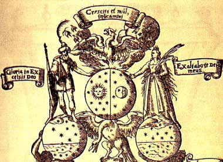
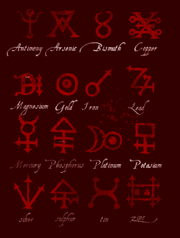
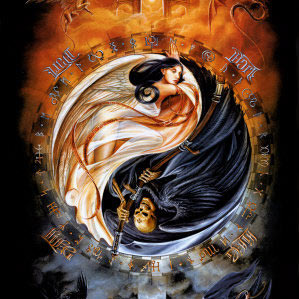
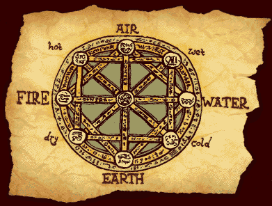
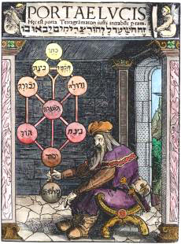

中世纪炼金术概述

Alchemy一词源自阿拉伯文El-kimya，埃及文为Khem，比基督教出现还要更早一些。炼金术结合了法术(Magic)和希腊的神秘哲学(Hermetic Philosophy)，四世纪以后，炼金术被压制。十二世纪，炼金术经由西班牙的伊斯兰教炼金术士传入欧洲。在欧洲，中世纪炼金术结合了诺斯替教的成分，最流行的部分就是点石成金这种技术。
“如其在内，如其在外；如其在上，如其在下。(As within, so without; as above, so below.)”炼金术的这四句金言代表了炼金术的整个宇宙观，在上者或在外者，指大宇宙，包括神、自然和整个地球；在下者或在內者，指小宇宙，指人类的灵魂或心灵。无论是神、自然、人类或心灵，內外上下的相应表现的是一个统一和谐的宇宙，用中国传统的炼丹术的话来说，是大周天与小周天的关系；用西方宇宙论的话来说，就是大宇宙(Macrocosm)与小宇宙(Microcosm)的关系。
炼金术的基本假设是：物质是“活的”，能夠成长，为大地之母所养育。人类如果能够知道大地之母养育金属的方法，那么，人们就可以依此方法制造出金属。

以炼金术中的凝结(coagulation)和溶解(solution)两个术语为例，凝结和溶解实际上就是对宇宙韵律的回应：如旋绕——开展(Involution-Evolution)、吸入——呼出(Inhalation-Exhalation)等对立现象的统合，如心物合一、生死齐一等两种相对韵律的统一，而用中国道家或道教的观念来说，就是阴阳协调。“如其在內，如其在外；如其在上，如其在下”代表相对性象征的统合，中国的太极图最能说明这种特色，亦即，炼金术的一体性世界观是以统合对立面做为表现手法。

说了这么多玄而又玄的话，再谈点简单一点的。亚里斯多德利用水、火、土和空气四种元素不同程度的聚合或者融合来揭示物质世界的变化，这就是所谓的“四元素说”。简单解释起来就是万物都是由固定的几种元素构成的，由于构成相同因此可以进行相互的转化（说句题外话，在我的《魔幻牌：炼金术士》游戏中有5种元素，也就是加上了所谓的第五元素，意为人的精神。这个其实不属于炼金术的范畴了，属于哲学理念，但是为了配合游戏系统我在游戏中还是加入了这个概念）。

为了促成变化，炼金术士必须精通许多工艺技术，比如溶解、蒸馏、提炼、腐化、升华、煅烧、发酵等等。同时也必须学习制作所需要的器具或仪器，比如用于加热的坩埚、蒸馏用的蒸馏瓶或收集炼金物料的容器等等。除此之外，炼金术士又是必须进行某些特定的神秘仪式。"
我们知道物质的转变是可能的，但却是极其缓慢的，比如石油和煤炭的形成。因此无论是炼金术技术的落实或仪式的进行，“时间”都是最重要的因素。因为获得物质精华或达到精神完美的境界都需要时间，而且很可能是漫长的过程。
因此炼金术士们才会绞尽脑汁配制“哲学家之石”，企图加速缓慢的变化过程。这种促进变化进行的做法也隐含着战胜时间限制的企图，也是摆脱永恒束缚的愿望的投射。在物质上如果真的能获得贵金属如黄金，则代表着巨大财富的获得，意味着可以从整体经济体系中独立。至于精神上如果摆脱时间的限制，更是人类梦寐以求长生不老的实现。
历史上人们对于提炼贵金属一直有着浓厚的兴趣，不过除了招摇撞骗的术士的确是靠着“技术”来达到自己的经济独立之外，炼金术并没有真正为人类社会带来什么样的帮助。反倒是因为太多“愚人金”流入市面混乱了金融的秩序。例如二九二年罗马皇帝便因此下令废止炼金术。在十四世纪初期，法国的亚唯农教主若望二十二世(the
Avignon Pope John XXII)因为炼金术士制造伪币流入市面，而下令把炼金术士驱逐出境。然而炼金术的梦想依然鼓舞着人们。'

然而不可否认，作为历史发展，科学进化中不可抹煞的一笔，炼金术直接带动了近代化学的发展。利巴菲乌斯(Libavius，1540―1616)的《炼金术》(Alchymia)一书(1595年)中详细描绘了理想中的“化学大楼”的正视图和底层平面图，设计之精巧完全超越了同时代的普通炼金实验室，包括勃鲁盖尔(Pieter
Brueghel，约1525―1569)、斯特拉达尼斯(Johannes Stradanus，约1530―1605)、皮尼亚斯(J.
Pinas，约1600)、小特尼尔斯(David Teniers the younger，1610―1690)和斯蒂恩(Jan
Steen，1626―1679)等人。此人曾做过一段科堡中学的校长，还曾任职耶拿大学的历史学教授。
炼金术之所以被披上神秘外衣，是历史的缘故，而不是知识本质的逻辑必然。它之所以神秘，是因为其大量使用的象征与符号，而不好的名声则多少是教会以及自然哲学家的“功劳”。炼金术的观念到现在就像榨干了的甘蔗，到最后只剩下一些现代科学不感兴趣的残渣，被一把扫进非理性的神秘国度。然而正是这种神秘、挥之不去的面纱才惹得很多人趋之若鹜地研究或者探求。在现在这个日益失去神秘的世界，我觉得这样也没什么不好：）
Source: http://hi.baidu.com/qwhsz/blog/item/5b93183c9af4c0cc7d1e71e9.html